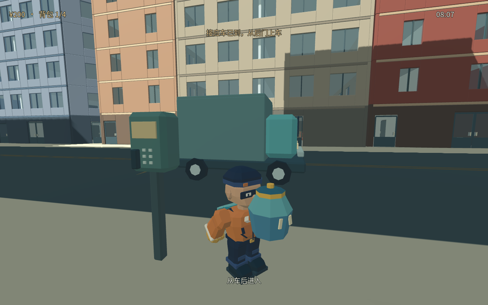
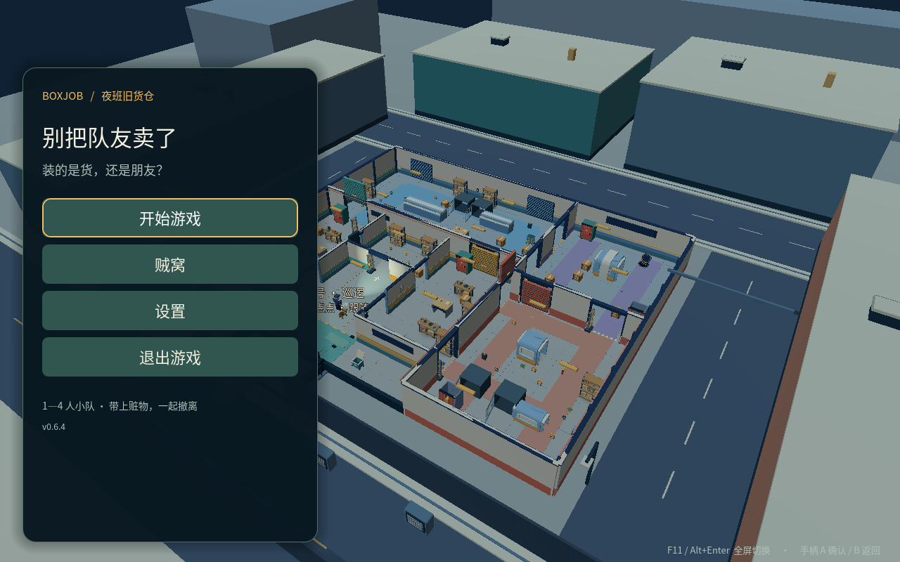

WINDOWS · CITY 076
Windows 城市测试版
0.7.6 · ZIP · 53.9 MB（51.4 MiB）
已核验 ZIP 大小与 SHA-256；Windows 真机尚未测试。
进入即将封存的街区，搜寻目标、冒险搬运。安保逼近时，是再带走一件，还是现在撤离？带着收获离开，才算干完这票活。
暂定背景「城区封存前的最后一班」。先把一局搜撤打磨好；完整城市生活模拟不在本轮范围。
在通行修复与背包HUD、楼层室内差异、可乘坐电梯之上，合入默认开启的明亮三渲二与店面玻璃边框/腰线。核心布局保留。这是测试渠道包；Windows 真机尚未运行，不进入正式自动更新。
0.7.6 · ZIP · 53.9 MB（51.4 MiB）
已核验 ZIP 大小与 SHA-256；Windows 真机尚未测试。
0.7.6 · ZIP · 76.5 MB（73.0 MiB）
Mac 原包已离屏启动并加载主场景（无脚本错误）；完整原包回合与长时间闪烁观察仍待用户试玩。
城市版单独解压、单独启动。保留已有正式版和存档；旧正式版的自动更新通道仍为 0.6.6。未合入天气与十分钟新玩法推车/风险模块。F8 可开关三渲二，--toon-quality=low 为较弱预设。

进入街区寻找货物，选好这趟要带走的目标。
把货物带向出口，权衡多拿一件的风险。
被发现后跑脱追逐；保安会搜索返回，也会抓捕。
决定何时收手，呼叫撤离，把收获带出去。
首页、设置与角色选择；单机搜撤和保安追逃；容量24、重量上限16kg背包HUD与预览；53种货物；楼层室内差异；可乘坐电梯；默认明亮三渲二与店面玻璃边框/腰线。门关闭/打开/损坏外观不同。F8开关风格。
想继续原有合作潜入玩法，可下载 0.6.6。支持 1–4 人同网组队，双方使用相同版本；语音默认关闭。城市 0.7.6 测试渠道与这一版本分开体验。
0.6.6 包含多种包装、整包撤离、改装与训练场、非致命推杆和敌方人机。高延迟下可能卡在装备同步；异地联机公共服务尚未上线。
ZIP · 54.6 MiB
下载 Windows 0.6.6ZIP · 76.1 MiB
下载 Mac 0.6.6
0.6.6 按键语音需主动开启：键盘 C，手柄十字键上长按说话。支持手柄按键与 R3 自由观察，已完成模拟输入验证；实体手柄、真实麦克风和 Windows 真机自动安装尚未验证。
Mac 城市包仅本地 ad-hoc 签名，未完成 Developer ID 签名与公证。Windows 安装与更新重启仍需真机验证。0.5.0 起原正式版可检查签名更新源，当前仍指向 0.6.6；旧版 Windows 自动安装可能失败，可手动完整解压到独立目录。GitHub 自动生成的 Source code 压缩包是下载网站归档，不是游戏安装包。